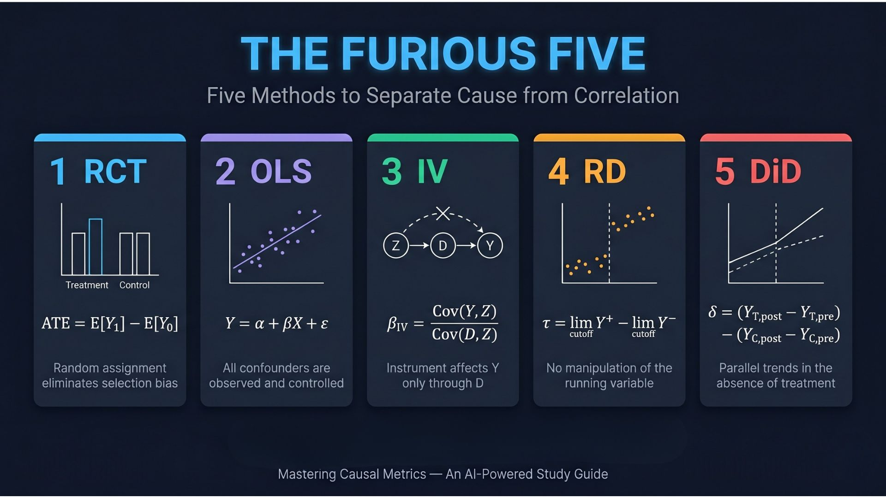

Curriculum
6 chapters organized around the five tools of causal inference
_
A hands-on AI-powered study guide to Mastering Causal Metrics. Learn the foundations of causal inference with interactive Python notebooks and AI tools.

Based on Mastering 'Metrics by Angrist & Pischke. Learn causal inference from randomized trials to differences-in-differences.
Zero-installation Google Colab notebooks. Real datasets, working code, and complete implementations of every method.
Multiple AI tutors with distinct pedagogical styles.
6 chapters organized around the five tools of causal inference
Video by Marginal Revolution University · Press Esc or click outside to close